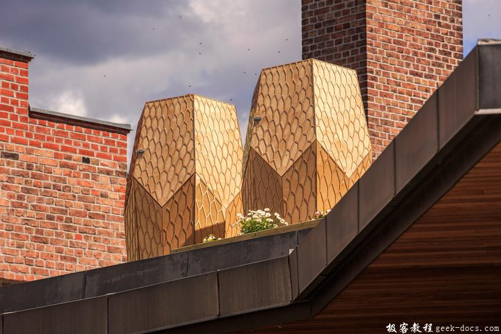

Vulkan 描述符布局和缓冲区，在Vulkan中正确处理此问题的途径是使用资源描述符(resource descriptors)。描述符是着色器自由访问缓冲区和图像资源的一种方式。我们需要设置一个包含转换矩阵的缓冲区，并使顶点着色器通过描述符访问它们。

简介
我们现在可以将任意属性传递给每个顶点的顶点着色器使用。但是全局变量呢？我们将会从本章开始介绍3D图形相关的内容，并需要一个模型视图投影矩阵。我们可以将其包含为顶点数据，但是这非常浪费带宽、内存，并且需要我们在变换的时候更新顶点缓冲区的数据。这种变换通常发生在每一帧。
在Vulkan中正确处理此问题的途径是使用资源描述符(resource descriptors)。描述符是着色器自由访问缓冲区和图像资源的一种方式。我们需要设置一个包含转换矩阵的缓冲区，并使顶点着色器通过描述符访问它们。描述符的使用由三部分组成：
- 在管线创建时指定描述符的布局结构
- 从描述符对象池中分配描述符集合
- 在渲染阶段绑定描述符集合
描述符布局(descriptor layout)指定了管线访问的资源的类型，就像渲染通道指定附件的类型一样。描述符集合(descriptor set)指定将绑定到描述符的实际缓冲区或映射资源。就像帧缓冲区为绑定渲染通道的附件而指定实际的图像视图一样。描述符集合会像顶点缓冲区和帧缓冲区一样被绑定到绘制命令。
有许多类型的描述符，但在本章中，我们将使用统一的缓冲区对象uniform buffer objects(UBO)。我们将会在后面的章节中讨论其他类型的描述符，但基本过程是一样的。假设我们有一个数据，我们希望顶点着色器拥有一个这样的C结构体：
struct UniformBufferObject {
glm::mat4 model;
glm::mat4 view;
glm::mat4 proj;
};
我们可以拷贝数据到VkBuffer并在顶点着色器中通过uniform buffer object描述访问它们：
layout(binding = 0) uniform UniformBufferObject {
mat4 model;
mat4 view;
mat4 proj;
} ubo;void main() {
gl_Position = ubo.proj * ubo.view * ubo.model * vec4(inPosition, 0.0, 1.0);
fragColor = inColor;
}
我们会在每一帧更新模型，视图和投影矩阵，使前一章的矩形以3D旋转。
顶点着色器
修改顶点着色器包含像上面指定的统一缓冲区对象(uniform buffer object)。假设大家比较熟悉MVP变换。如果不是这样，可以查看前面章节中提到的内容。
#version 450
#extension GL_ARB_separate_shader_objects : enablelayout(binding = 0) uniform UniformBufferObject {
mat4 model;
mat4 view;
mat4 proj;
} ubo;layout(location = 0) in vec2 inPosition;
layout(location = 1) in vec3 inColor;layout(location = 0) out vec3 fragColor;out gl_PerVertex {
vec4 gl_Position;
};void main() {
gl_Position = ubo.proj * ubo.view * ubo.model * vec4(inPosition, 0.0, 1.0);
fragColor = inColor;
}
需要注意的是uniform, in 和 out它们声明的顺序无关紧要。binding指令与location属性指令类似。我们将在描述符布局中引用此绑定。使用gl_Position的行更改为使用变换矩阵计算裁剪坐标的最终位置。与2D三角形不同，最后一个裁剪坐标的分量也许不是 1当转换为屏幕上的最终归一化设备坐标时，会导除法不一致。这用于透视投影作为透视除法perspective division 并且对于使更近的无题看起来比对于远处的物体更大。
描述符集布局
下一步在C++应用层定义UBO数据结构，并告知Vulkan在顶点着色器使用该描述符。
struct UniformBufferObject {
glm::mat4 model;
glm::mat4 view;
glm::mat4 proj;
};
我们可以使用GLM中的与着色器中结构体完全匹配的数据类型。矩阵中的数据与着色器预期的二进制数据兼容，所以我们可以稍后将一个UniformBufferObject通过memcpy拷贝到VkBuffer中。
我们需要在管线创建时，为着色器提供关于每个描述符绑定的详细信息，就像我们为每个顶点属性和location索引做的一样。我们添加一个新的函数来定义所有这些名为createDescritorSetLayout的信息。考虑到我们会在管线中使用，它应该在管线创建函数之前调用。
void initVulkan() {
...
createDescriptorSetLayout();
createGraphicsPipeline();
...
}...void createDescriptorSetLayout() {}
每个绑定都会通过VkDescriptorSetLayoutBinding结构体描述。
void createDescriptorSetLayout() {
VkDescriptorSetLayoutBinding uboLayoutBinding = {};
uboLayoutBinding.binding = 0;
uboLayoutBinding.descriptorType = VK_DESCRIPTOR_TYPE_UNIFORM_BUFFER;
uboLayoutBinding.descriptorCount = 1;
}
前两个字段指定着色器中使用的binding和描述符类型，它是一个UBO。着色器变量可以表示UBO数组，descriptorCount指定数组中的数值。比如，这可以用于骨骼动画中的每个骨骼变换。我们的MVP变换是一个单UBO对象，所以我们使用descriptorCount为1。
uboLayoutBinding.stageFlags = VK_SHADER_STAGE_VERTEX_BIT;
我们也需要指定描述符在着色器哪个阶段被引用。stageFlags字段可以是VkShaderStage标志位或VK_SHADER_STAGE_ALL_GRAPHICS的组合。在我们的例子中，我们仅仅在顶点着色器中使用描述符。
uboLayoutBinding.pImmutableSamplers = nullptr; // Optional
pImmutableSamplers字段仅仅与图像采样的描述符有关，我们会在后面的内容讨论。现在可以设置为默认值。
所有的描述符绑定都会被组合在一个单独的VkDescriptorSetLayout对象。定义一个新的类成员变量pipelineLayout：
VkDescriptorSetLayout descriptorSetLayout;
VkPipelineLayout pipelineLayout;
我们使用vkCreateDescriptorSetLayout创建。这个函数接受一个简单的结构体VkDescriptorSetLayoutCreateInfo，该结构体持有一个绑定数组。
VkDescriptorSetLayoutCreateInfo layoutInfo = {};
layoutInfo.sType = VK_STRUCTURE_TYPE_DESCRIPTOR_SET_LAYOUT_CREATE_INFO;
layoutInfo.bindingCount = 1;
layoutInfo.pBindings = &uboLayoutBinding;if (vkCreateDescriptorSetLayout(device, &layoutInfo, nullptr, &descriptorSetLayout) != VK_SUCCESS) {
throw std::runtime_error("failed to create descriptor set layout!");
}
我们需要在创建管线的时候指定描述符集合的布局，用以告知Vulkan着色器将要使用的描述符。描述符布局在管线布局对象中指定。修改VkPipelineLayoutCreateInfo引用布局对象：
VkPipelineLayoutCreateInfo pipelineLayoutInfo = {};
pipelineLayoutInfo.sType = VK_STRUCTURE_TYPE_PIPELINE_LAYOUT_CREATE_INFO;
pipelineLayoutInfo.setLayoutCount = 1;
pipelineLayoutInfo.pSetLayouts = &descriptorSetLayout;
到这里可能会有疑问，为什么可以在这里指定那么多的描述符布局集合，因为一个包含了所有的绑定。我们将在下一章回顾一下，我们将在其中查看描述符对象池和描述符集合。
描述符布局应该在程序退出前始终有效：
void cleanup() {
cleanupSwapChain(); vkDestroyDescriptorSetLayout(device, descriptorSetLayout, nullptr); ...
}
Uniform 缓冲区
在下一章节我们会为着色器重点包含UBO的缓冲区，但是首先要创建该缓冲区。在每一帧中我们需要拷贝新的数据到UBO缓冲区，所以存在一个暂存缓冲区是没有意义的。在这种情况下，它只会增加额外的开销，并且可能降低性能而不是提升性能。
添加类成员uniformBuffer和uniformBufferMemory：
VkBuffer indexBuffer;
VkDeviceMemory indexBufferMemory;VkBuffer uniformBuffer;
VkDeviceMemory uniformBufferMemory;
同样需要添加新的函数createUniformBuffer来分配缓冲区，并在createIndexBuffer之后调用。

void initVulkan() {
...
createVertexBuffer();
createIndexBuffer();
createUniformBuffer();
...
}...void createUniformBuffer() {
VkDeviceSize bufferSize = sizeof(UniformBufferObject);
createBuffer(bufferSize, VK_BUFFER_USAGE_UNIFORM_BUFFER_BIT, VK_MEMORY_PROPERTY_HOST_VISIBLE_BIT | VK_MEMORY_PROPERTY_HOST_COHERENT_BIT, uniformBuffer, uniformBufferMemory);
}
我们要写一个单独的函数来更新uniform缓冲区，确保每一帧都有更新，所以在这里不会有vkMapMemory。UBO的数据将被用于所有的绘制使用，所以包含它的缓冲区只能在最后销毁：
void cleanup() {
cleanupSwapChain(); vkDestroyDescriptorSetLayout(device, descriptorSetLayout, nullptr);
vkDestroyBuffer(device, uniformBuffer, nullptr);
vkFreeMemory(device, uniformBufferMemory, nullptr); ...
}
更新 uniform 数据
添加新的函数updateUniformBuffer并在main loop中调用：
void mainLoop() {
while (!glfwWindowShouldClose(window)) {
glfwPollEvents(); updateUniformBuffer();
drawFrame();
} vkDeviceWaitIdle(device);
}...void updateUniformBuffer() {}
该函数会在每一帧中创建新的变换矩阵以确保几何图形旋转。我们需要引入新的头文件使用该功能：
#define GLM_FORCE_RADIANS
#include <glm/glm.hpp>
#include <glm/gtc/matrix_transform.hpp>#include <chrono>
glm/gtc/matrix_transform.cpp头文件对外提供用于生成模型变换矩阵的gl::rotate，视图变换矩阵的 glm:lookAt和 投影变换矩阵的 glm::perspective。GLM_FORCE_RADIANS定义是必要的，它确保像 glm::rotate 这样的函数使用弧度制作为参数，以避免任何可能的混淆。
chrono标准库的头文件对外提供计时功能。我们将使用它来确保集合旋转每秒90度，无论帧率如何。
void updateUniformBuffer() {
static auto startTime = std::chrono::high_resolution_clock::now(); auto currentTime = std::chrono::high_resolution_clock::now();
float time = std::chrono::duration_cast<std::chrono::milliseconds>(currentTime - startTime).count() / 1000.0f;
}
updateUniformBuffer函数将有关时间计算的逻辑开始，它会以毫秒级的精度计算渲染开始后的时间(秒为单位)。如果需要更准确的时间，则可以使用std::chrono::microseconds并除以1e6f，这是1000000.0的缩写。
我们在UBO中定义模型，视图和投影变换矩阵。模型变换将会围绕Z-axis旋转，并使用time变量更新旋转角度：
UniformBufferObject ubo = {};
ubo.model = glm::rotate(glm::mat4(1.0f), time * glm::radians(90.0f), glm::vec3(0.0f, 0.0f, 1.0f));
glm::rotate函数对现有的变换矩阵进行旋转，它使用旋转角度和旋转轴作为参数。glm::mat4(1.0f)的构造器返回归一化的矩阵。使用time * glm::radians(90.0f)可以实现每秒90度的旋转目的。
ubo.view = glm::lookAt(glm::vec3(2.0f, 2.0f, 2.0f), glm::vec3(0.0f, 0.0f, 0.0f), glm::vec3(0.0f, 0.0f, 1.0f));
对于视图变换，我们决定以45度从上观察几何图形。glm::lookAt 函数以眼睛位置，中心位置和上方向为参数。
ubo.proj = glm::perspective(glm::radians(45.0f), swapChainExtent.width / (float) swapChainExtent.height, 0.1f, 10.0f);
选择使用FOV为45度的透视投影。其他参数是宽高比，近裁剪面和远裁剪面。重要的是使用当前的交换链扩展来计算宽高比，以便在窗体调整大小后参考最新的窗体宽度和高度。
ubo.proj[1][1] *= -1;
GLM最初是为OpenGL设计的，它的裁剪坐标的Y是反转的。修正该问题的最简单的方法是在投影矩阵中Y轴的缩放因子反转。如果不这样做图像会被倒置。
现在定义了所有的变换，所以我们可以将UBO中的数据复制到uniform缓冲区。这与我们对顶点缓冲区的操作完全相同，除了没有暂存缓冲区：
void* data;
vkMapMemory(device, uniformBufferMemory, 0, sizeof(ubo), 0, &data);
memcpy(data, &ubo, sizeof(ubo));
vkUnmapMemory(device, uniformBufferMemory);
使用UBO将并不是经常变化的值传递给着色器是非常有效的方式。相比传递一个更小的数据缓冲区到着色器中，更有效的方式是使用常量。我们在未来的章节中会看到这些。
在下一章节我们会讨论描述符集合，它会将VkBuffer绑定到uniform缓冲区描述符，最终着色器可以访问变换矩阵等数据。